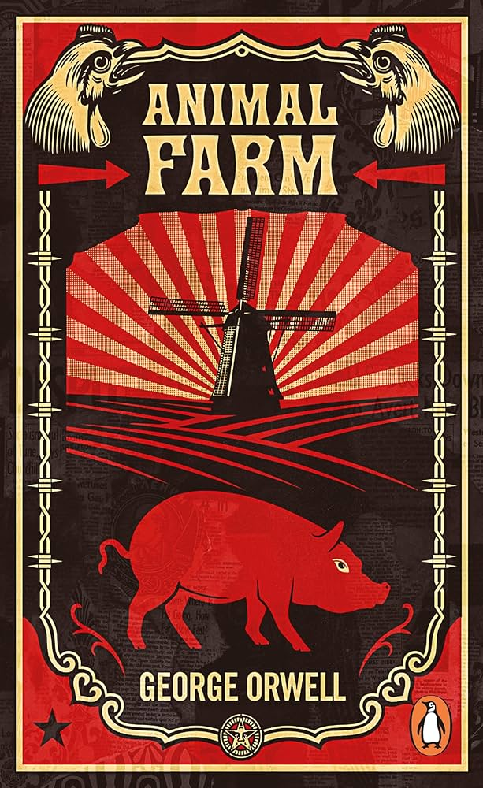

Political Allegory
“All animals are equal, but some animals are more equal than others.”
A revolution that begins with hope and ends in corruption. Orwell transforms a simple farm into a terrifying mirror of political power, propaganda, manipulation, and the slow death of freedom.
About The Book
Animal Farm is not just a story about animals —
it is a dark political allegory about how revolutions
slowly become dictatorships.
George Orwell exposes the corruption of power,
propaganda,
manipulation of truth,
and the terrifying transformation of leaders
into oppressors.
What begins as a dream of equality
slowly transforms into fear,
violence,
hierarchy,
and control.
Orwell demonstrates how people lose freedom gradually
while propaganda reshapes reality itself.
Main Characters
Role: Dictator of Animal Farm
Personality: Ruthless, manipulative, power-hungry
Symbolism: Authoritarian dictatorship
Role: Revolutionary leader
Personality: Intelligent & visionary
Symbolism: Idealistic revolution
Role: Loyal worker
Personality: Hardworking & innocent
Symbolism: Exploited working class
Chapter-wise Summary
Old Major gathers the animals together and explains how humans exploit them. He dreams of a future where animals live freely and equally without oppression. Before ending the meeting, he teaches the revolutionary song “Beasts of England.”
The animals revolt against Mr. Jones and successfully take control of the farm. Animal Farm is officially created, and the Seven Commandments are written as the foundation of equality.
The animals work together successfully, while Boxer becomes the symbol of loyalty and hard work. However, the pigs secretly begin taking privileges.
Humans attack Animal Farm to regain control, but the animals successfully defend themselves. Snowball emerges as a brave leader.
Napoleon uses trained dogs to chase Snowball away. From this point, Napoleon becomes the dictator of Animal Farm.
The pigs begin behaving more like humans. They trade with humans, move into the farmhouse, and manipulate the commandments.
Napoleon spreads fear throughout the farm. Animals are forced into false confessions and publicly executed.
Napoleon becomes worshipped like a god. The commandments are secretly changed to justify the pigs’ corruption.
Boxer is injured after years of hard work. Instead of helping him, Napoleon secretly sells him to a slaughterhouse.
The pigs fully transform into humans. In the final scene, the animals can no longer distinguish pigs from humans, proving the revolution completely failed.
Themes & Symbolism
Orwell demonstrates how authority slowly transforms leaders into oppressors.
Squealer manipulates truth to control the animals.
Napoleon maintains power through fear, violence, and lies.
My Thoughts
What shocked me most about Animal Farm was how slowly freedom disappeared. Orwell shows how propaganda, emotional slogans, and blind loyalty can destroy equality without people realizing it.